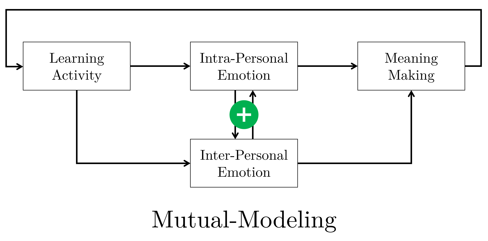
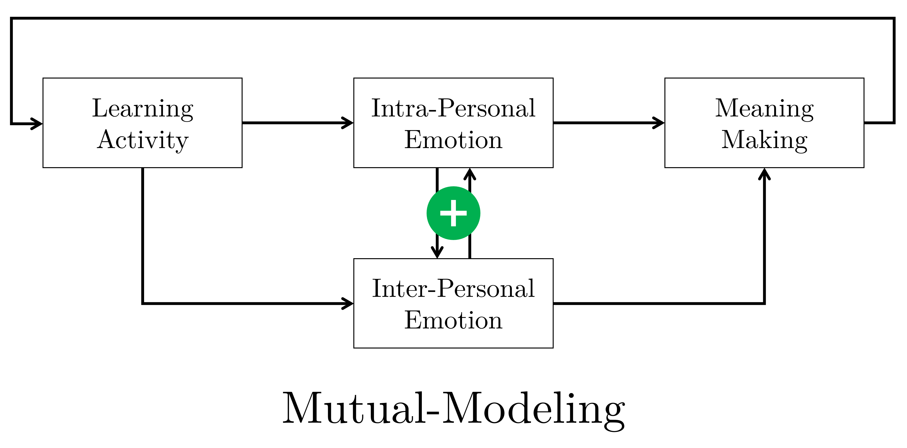

Implementation and Assessment of a Multipurpose Appraisal-Driven
Emotion Awareness Tool Based on Self-Report
With an Application to Computer-Mediated Learning
Environments
Mattia A. Fritz
TECFA, Université de Genève
The rise of affectivism
— Dukes et [63] al., 2021
Computer-Mediated Learning


Emotional awareness
-
Contributes to self-, co- and social-regulation
Järvelä et al., 2015; Lavoué et al., 2020; Miller & Hadwin, 2015 -
Sustains social presence
Jézégou, 2010; Kirschner et al., 2015; Lowenthal & Snelson, 2017 -
Improves partner- and mutual-modeling
Dillenbourg et al., 2016; Molinari et al., 2009; Sangin et al., 2011
Emotion Awareness Tool (EAT)

Reactive or proactive intelligence
Bestow learners the locus of control
Thesis intertwined objectives
-
Increase construct validity of emotional awareness
Theory: How it may be best conveyed through an EAT? -
Provide a multipurpose, open-science oriented tool
HCI: How can researchers and practitioners adapt a core tool to their multiple needs? -
Investigate factors determining use and perception
Empirical: Why and under which conditions learners may take advantage of an EAT?
Proof of Concept
Functional abstract model

Appraisal-driven emotion
 The dynamic architecture of the component process model, adapted
from Scherer (2010)
The dynamic architecture of the component process model, adapted
from Scherer (2010)
-
A cognitive evaluation on a set of
relevant criteria
Reflecting (on) emotion elicitation and differentiation -
A lexicalized emotion
Reflecting (on) the subjective feeling with a symbolic (shared) expression
N-Dimensional Affective Spaces
Two dimensions are not necessarily the best way to represent emotions (Fontaine & Scherer, 2019)Open Science/Education
Toolbox to create, share, credit instances of an EAT according to interests and needs.Studies
Studies overview
-
S1 Randomized controlled trial
Different access to and use of emotional awareness in synch./collab. -
S2 Longitudinal quasi-experimental plan
Use and perception over time in a blended course over a few weeks in asynch./indiv.
Individual research questions and overall assessment of multipurpose EAT/toolbox.
S1 Rationale
-
Work with dyads used awareness vs. no awareness
Avry, 2020; Eligio et al., 2012; Molinari, Chanel et al., 2013 -
Awareness consistent with full mutual-modeling
Both learners disposed of symmetric emotional information (Dillenbourg et al., 2016) - But full model can be broken down

 

S1 Question and hypotheses
Q: Does a different use of, and access to emotional information determine the use of an EAT in synchronous and collaborative computer-mediated settings?-
Express emotions
Number of emotions expressed through the EAT (DV1) -
Peruse emotions
Information seeking (DV2) and information processing (DV3) with eye-tracking measures
S1 Experimental plan
S1 Experimental task
 Simulated joint problem-solving task to control for any source of
emotional triggers/information.
Simulated joint problem-solving task to control for any source of
emotional triggers/information.
S1 Emotion expression
Self M = 12.5 (5.3) | Partner M = 12.7 (6.0) | Mutual M = 15.6 (5.7)

| contrast | estimate | p.value |
|---|---|---|
| Self - Partner | -0.17 [-6.28, 5.95] | 1.00 |
| Self - Mutual | -3.14 [-8.60, 2.31] | 0.34 |
| Partner - Mutual | -2.98 [-8.90, 2.95] | 0.44 |
S1 Information seeking
Self M = 40.9 (16.8) | Partner M = 75.4 (47.3) | Mutual M = 84.6 (23.8)
| contrast | estimate | p.value |
|---|---|---|
| Self - Partner | -34.53 [-66.80, -2.26] | 0.03 |
| Self - Mutual | -43.73 [-72.51, -14.94] | < 0.01 |
| Partner - Mutual | -9.20 [-40.46, 22.07] | 0.75 |
S1 Information processing
Self M = 28.2 (17.2) | Partner M = 68.5 (39.8) | Mutual M = 60.1 (27.7)
| contrast | estimate | p.value |
|---|---|---|
| Self - Partner | -40.20 [-71.03, -9.37] | 0.01 |
| Self - Mutual | -31.81 [-59.31, -4.31] | 0.02 |
| Partner - Mutual | 8.39 [-21.47, 38.26] | 0.77 |
S1 Transitions between AOI
| contrast | transition | estimate | p.value |
|---|---|---|---|
| Self - Partner | Expressing to Perceiving | -0.92 | 0.98 |
| Self - Mutual | Expressing to Perceiving | -18.10 | < 0.01 |
| Partner - Mutual | Expressing to Perceiving | -17.18 | < 0.01 |
| Self - Partner | Perceiving to Expressing | -4.33 | 0.65 |
| Self - Mutual | Perceiving to Expressing | -17.37 | < 0.01 |
| Partner - Mutual | Perceiving to Expressing | -13.04 | 0.02 |
| Self - Partner | Expressing to Task | 10.29 | 0.09 |
| Self - Mutual | Expressing to Task | 7.13 | 0.21 |
| Partner - Mutual | Expressing to Task | -3.16 | 0.78 |
| Self - Partner | Task to Expressing | 13.12 | 0.02 |
| Self - Mutual | Task to Expressing | 6.46 | 0.28 |
| Partner - Mutual | Task to Expressing | -6.66 | 0.34 |
| Self - Partner | Perceiving to Task | -7.08 | 0.32 |
| Self - Mutual | Perceiving to Task | -17.19 | < 0.01 |
| Partner - Mutual | Perceiving to Task | -10.11 | 0.09 |
| Self - Partner | Task to Perceiving | -10.46 | 0.09 |
| Self - Mutual | Task to Perceiving | -15.73 | < 0.01 |
| Partner - Mutual | Task to Perceiving | -5.27 | 0.51 |
S1 Discussion
-
Trends favour use in inter-personal interfaces
More expression, seeking, processing, and emotion as information transitions (Van Kleef, 2018) -
... but also potential for intra-personal benefits
A pure individual, non-collaborative condition would be interesting (Torre & Liebermann, 2018) -
Simulated collaboration limits representativeness
Timer and task compliance can confound use of the EAT (Maxwell et al., 2017) -
Interest for using the EAT as experimental factor
Opens up potential in comparing type of awareness depending on context (Buder, 2011)
S2 Rationale
-
Interest for emotion self-regulation over time
Lavoué et al., 2017, 2020; Molinari et al., 2016; Ruiz et al., 2016 -
Affective dimension may contribute to social presence
Jézégou, 2010; Kirschner et al., 2015; Lowenthal & Snelson, 2017 -
Adopt an EAT in asynchronous and individual learning
Students only self-reporting emotions in Molinari et al. (2016) were also interested in their colleagues' emotions
S2 Research questions
Exploratory analysis in a longitudinal settings about the
-
Use of the EAT over time
Cumulative number of emotion expressed (DV1) -
Perception of usefulness over time
Ad-hoc Emotional Awareness Usefulness (EAU) scale with 7 dimensions (DV2) -
Comparison between two different classes
Class 1 ≠ Class 2 may suggest interaction effects in the use of the EAT (Dillenbroug, 2016).
S2 Method

S2 Emotions expressed
Class 1 N = 16, M = 11.5 (21.7); Mdn = 3
Class 2 N = 17, M = 13.5 (11.8); Mdn = 12
 Free and mostly not reminded use over 2/3 of the first year
semester
Free and mostly not reminded use over 2/3 of the first year
semester
S2 Perception of usefulness
Ad-hoc Emotional Awareness Usefulness (EAU) scale
| # | Dimension | Item |
|---|---|---|
| 1 | Frequency | I used the tool frequently (e.g. every time I worked for the course). |
| 2 | Affordance | The use of the tool prompted me to share my emotions. |
| 3 | Social Presence | The use of the tool allowed me to feel less lonely during remote learning periods. |
| 4 | Self-Understanding | The use of the tool allowed me to better understand my emotions. |
| 5 | Understanding Others | The use of the tool allowed me to better understand the emotions of my colleagues. |
| 6 | Self-Other Comparison | The use fo the tool allowed me to compare my emotions with those of my colleagues. |
| 7 | Self-Regulation | The use of the tool allowed me to regulate my emotions. |
S2 Perception of usefulness
S2 Perception of usefulness
Multi-Level Model
| num Df | den Df | F | p.value | |
|---|---|---|---|---|
| group | 1 | 27.99 | 0.56 | .462 |
| survey | 3 | 716.75 | 63.50 | <.001 |
| dimension | 6 | 713.99 | 29.40 | <.001 |
| group:survey | 3 | 716.75 | 1.17 | .319 |
| group:dimension | 6 | 713.99 | 3.77 | .001 |
| survey:dimension | 18 | 713.99 | 2.09 | .005 |
| group:survey:dimension | 18 | 713.99 | 0.66 | .848 |
Effect of group only detected with the dimension interaction, probably due to Frequency.
Contrast Final-Expectancy
| dimension | estimate | z.ratio | p.value |
|---|---|---|---|
| Frequency | -1.75 | -3.38 | < 0.01 |
| Affordance | -2.02 | -3.90 | < 0.01 |
| Social Presence | -2.83 | -5.45 | < 0.01 |
| Self-Understanding | -0.87 | -1.68 | 0.09 |
| Understanding Others | -2.58 | -4.98 | < 0.01 |
| Self-Other Comparison | -2.89 | -5.56 | < 0.01 |
| Self-Regulation | -1.11 | -2.15 | 0.03 |
Drop from expectancy for all dimensions except Self-Understanding. Particularly steep for Self-Other Comparison, Social Presence, and Understanding Others.
S2 EAU psychometric indicators
Exploratory Factor Analysis

Reliability/Uni-demension
| \(\omega_h\) | \(\alpha\) | \(\omega_{tot}\) | Uni | r.fit | fa.fit | max.split | min.split | mean.r | med.r |
|---|---|---|---|---|---|---|---|---|---|
| 0.6 | 0.86 | 0.9 | 0.86 | 0.92 | 0.93 | 0.88 | 0.71 | 0.46 | 0.35 |
S2 Discussion
-
Scarce use of the EAT
Too abstract for mirroring/mutual-modeling, other channels available, too many tools. -
Promising expected usefulness drops with (non-) use
Students need to connect socio-affectively with colleagues, but EAT/settings inappropriate. -
Consistency between classes
Limited interactive effect or reverse effect: dissuasion even for students with intentions!
Conclusion
Computational model worth it?


Good predictive accuracy (80%), but Valence and Control/Power not independent
\(M_\rho\) = 0.47 (0.43). See also Molinari et al. (2016) or Scherer & Fontaine (2019).
Structural Causal Model
Tentative Structural Causal Model (Cinelli et al., 2020; Pearl
et al., 2016; Rohrer, 2018)
of the
Direct Effect of Emotional
Awareness on Learning Processes and Outcomes.
It may be necessary to control only for Task and Regulation .
Final thoughts
Limitations
- Where is learning in all this?
- Contribution is mainly analytic: no severe test of claims
- Scholars interested in self-report or affect-aware systems
Future developments
- Usability test with scholars
- Use the model as generative algorithm
- Compare types of (emotional) awareness
Thank you for your attention !
Presentation created with
Reveal.js.